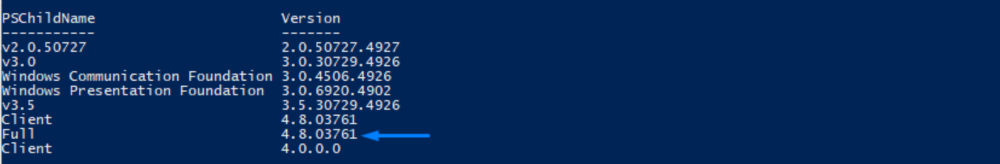
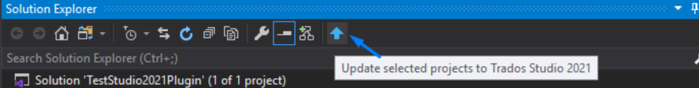
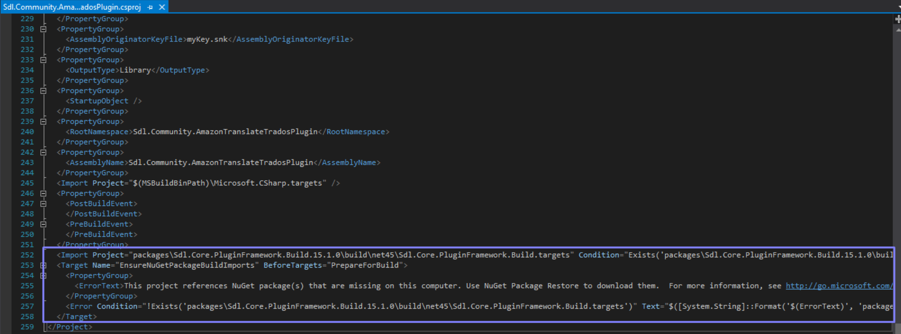

How to update plugins to Trados Studio 2021
Plugins build for Trados Studio 2019 are not compatible with Trados Studio 2021. One of the breaking changes is the .Net Framework.
Note
In order to migrate a plugin to be compatible with Trados Studio 2021 we need to install: .NET Framework 4.8. It can be installed form https://dotnet.microsoft.com/download/dotnet-framework/net48. After you install the framework a restart is required.
Visual Studio extension for Trados Studio 2021. Fore more details on how to install the extension see https://rws.github.io/studio-api-docs/articles/gettingstarted/setting_up_a_developer_machine.html.
How check if the .Net Framework was installed correctly
After restart, you can check if the version was installed correctly using Powershell (opened as Administrator) by typing following command.
gci ‘HKLM:\SOFTWARE\Microsoft\NET Framework Setup\NDP’ -recurse | gp -name Version -EA 0 | where { $_.PSChildName -match ‘^(?!S)\p{L}’} | select PSChildName, Version
Make sure that version 4.8 is displayed in the list. 
How to use the Visual Studio Extension
After the VS extension was installed, open the solution of the plugin which you want to migrate to Studio 2021. In the Solution explorer a new button should be available. After you select Update a warning message will appear, please select Reload all. 
How to check if the plugin was successfully migrated
- The .Net Framework of the project should be set to 4.8.
- All the references from .csproj sould point to Studio16 folder. For example
<HintPath>$(ProgramFiles)\SDL\SDL Trados Studio\Studio16\Sdl.Desktop.IntegrationApi.Extensions.dll</HintPath> - Deployment path should point to:
<PluginDeploymentPath>$(AppData)\Sdl\Sdl Trados Studio\16\Plugins</PluginDeploymentPath> - Min version from manifest file should be set to 16.0
Errors which might appear in Visual Studio after project migration
Plugin Framework error
If after migration in Visual Studio console appears an error regarding PluginFramework:

We need to migrate the packages.config to PackageReference from VS solution.

Unload the project and edit the .csproj file by removing following code: 
Reload the project and build the solution, all the references should be recognised and the plugin should compile without any errors.
.NetFramework is higher than the current targeted framework error
Unload the project and search in .csproj file for TargetFrameworkVersion. Make sure you have only one TargetFrameworkVersion version in the file and is pointing to v4.8. If there is a second reference in the file please remove that version.